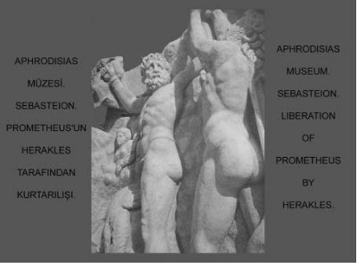

Argos kralının hem çok becerikli hem çok iyi yürekli kızı İo'nun güzelliği de dillere destandı... Baştanrı Zeus'un karısı tanrıça Hera bile, yüreğinin her türlü şeytanlıktan ırak ve duygularının katışıksız olması yüzünden bu güzel İo'yu çok beğeniyordu. Zaten çok geçmeden de onu kendi tapınağında başrahibe olarak görevlendirdi... Ne var ki ayran gönüllü Baştanrı Zeus; güzel İo'yu karısı Hera'nın tapınağında görünce, ona deli divane vuruluverdi!.. İo'yu ayartıp tapınağın dışında, karısı tanrıça Hera'dan uzak bir yerlerde buluşabilmek için her gece düşlerine girmeye başladı:
Ey mutlu kız, niçin yalnızsın böyle,
Erkeklerin en yücesi özlerken seni?
Zeus yanıp tutuşuyor senin için...
Onun isteğine karşı koma sakın!
Kalk git Argos'un yeşil çayırlıklarına.
Git ki Zeus görsün orada seni,
Doysun seni görmeye Zeus'un gözü....
İo her gece duyduğu bu çağrılardan artık bıkıp usandı; hatta ürkmeye başladı...
Sonunda gidip Argos kralı olan babasına açık açık anlattı durumunu. Babası da bu yinelenip duran düşü tanrıların elçilerini çağırıp yordurdu. Ünlü bir bilici, kızını saraydan kovmasını öğütledi ona. Yoksa Zeus'un çok kötülükler edeceğini söyledi. Bu yüzden de Argos kralı, hem kendini hem de kızını Baştanrı Zeus'un şerrinden korumak için onu saraydan uzaklaştırdı! İo gözyaşları döke döke bir vadiye sığındı. Amacına ulaşan Baştanrı Zeus da artık Olimpos tanrılar sarayından gizlice sıvışıp yakışıklı bir delikanlı kılığına girmeye, karısı Hera'nın görmemesi için de sislere boğduğu bu vadide İo'yla buluşmaya başladı... Ne var ki her şeyi görüp bilen ve aralarındaki bir anlaşmazlık yüzünden zaten Zeus'a diş bileyen güneş tanrısı Helyos, onun gizli gizli çevirdiği bu oyunları karısı tanrıça Hera'nın kulağına yetiştiriverdi! Haliyle kıskançlıktan küplere binen tanrıça Hera, büyük bir hışımla Olimpos'tan inip yeryüzünde kocası Zeus'un izini sürmeye başladı. Durumu sezen Zeus da sevgilisi İo'yu bembeyaz bir düveye dönüştürüverdi hemen!.. Ne var ki kocasının bu oyununu yutmayan Hera, bu beyaz güzel düveyi kendisine armağan etmesini istedi ondan. Durumu kurtarmak isteyen Zeus da hiç mırın kırın etmeden, ama içi yana yana düveyi karısı Hera'ya armağan etti... Tanrıça Hera; beyaz bir düveye dönüşen bu güzel kızı, kocası Zeus dokunmasın diye, yüz gözlü dev bir sığırtmaca teslim etti. Bu dev sığırtmaç, beyaz düveyi Zeus'tan korumak için hiç yanından ayırmıyordu artık. Gündüz çayırlıklarda otlatıyor, akşamları da ahıra kapatıyordu. Kapısını sımsıkı kilitlediği ahırın önünde uyurken de, gözlerinden ellisini kapalı, ellisini açık bırakıyordu!.. Bu durumdan bıkıp usanan ve İo'yla yeniden buluşmak için can atan Zeus, oğlu haberci tanrı Hermes'i çağırdı bir gün yanına. İo'yu bu dev sığırtmaçtan kurtarması için bir şeyler yapmasını istedi...

Herakles, Prometeus'u zincirlerinden kurtarmaya çalışırken
Böylesi işlerde çok hünerli olan tanrıların habercisi Hermes, çaldığı bir kavalla İo'dan ayrılmayan yüz gözlü dev sığırtmacı uyutup öldürdü... Durumu anında öğrenen Hera, bu kez de durmadan iğneleriyle ısıran bir sığırsineği saldı beyaz düveye dönüşmüş İo'nun başına! Haliyle onu habire ısıran bu azgın sinekten kurtulmak için ülke ülke dolaşmaya başladı zavallı düve... İşte böyle böyle acılar içinde yol alan İo; bir gün Kafkas dağlarında, Olimpos'tan çaldığı ateşi insanlara ulaştırdı diye Baştanrı Zeus'un bir kayaya mıhlattığı tanrı Prometeus'la karşılaştı... İo, kendisi gibi Zeus'un kurbanı olan bu acılı tanrıyla dertleşti uzun uzun...
Kollarından ve bacaklarından bir kayaya çivilenmiş olan tanrı Prometeus, Baştanrı Zeus'u tanıtmaya çalıştı düve kılığındaki İo'ya... Prometeus'un anlattığına göre Baştanrı Zeus, bir gün kendisini çağırmış ve güzelim dünyada bir şeylerin eksik olduğunu söylemiş... Bu eksikliği giderecek ve de tanrıların buyruklarını eksiksiz yerine getirecek birtakım yaratıklar üretmesini söylemiş... Prometeus da biraz düşündükten sonra hemen işe koyulmuş... Adına insan denecek varlığı yaratmak için toprağa su karıştırıp karmaya başlamış... Tanrılara özgü zekâyı, duygusallığı ve pekçok yetenekleri bu kilden oluşan hamurla karıştırmış... Sonra belki gerekli olur diye bir zamanlar Zeus'un kendisine döktürdüğü gözyaşlarından da karıştırmış bu hamura... Sonra da bütün bu yeteneklerini iyi kullansın ve dünyayı bütün boyutlarıyla görebilsin, hem aydınlansın, hem aydınlatsın diye içine ateş de koymuş... Sonunda tanrılara benzeyen o güzel insanı şekillendirmiş ve götürüp Baştanrı Zeus'a teslim etmiş. Ne var ki Zeus bu yeni yaratığı inceledikten sonra onun aklından ve yeteneklerinden çok ürkmüş... Hele ateşle ısınıp aydınlanırsa dünyayı gönlünce dönüştürmeye, orada kendi yasalarına göre özgürce yaşamaya kalkar, diye düşünmüş. O yüzden de hemen ateşi ondan alıp bir yerlere saklamış...
İşte bütün bunları kısaca anlattıktan sonra Prometeus; evrenin tek egemeni olan bu tanrı için insanların kurtuluşunun ve özgürlüğünün önemli olmadığını söyledi. Tam tersine, Zeus için önemli olan; kendisinin dayattığı ve saltanatını sürdürmesine yarayan yasalarına insanların hiçbir şekilde başkaldırmaması ve onları tartışmasız kabul etmesiydi... Bunun gerçekleşmesi için de onların uyanıp aydınlanmamaları gerekiyordu. İşte o yüzden onlardan ışığı ve ateşi hep uzak tutuyordu!
Bunları anlattıktan sonra kolları çivili Prometeus; "Ne var ki çok severek ve aşkla yarattığım insanların haline acıdığım için, Zeus'un köşe bucak sakladığı o ateşi çalıp onlara ulaştırıverdim!. Zeus da bu yüzden beni işte böyle kayalara çiviletti..." dedi. Sonra da Zeus'un kendisine dayattığı böylesi bir cezadan mutlu olduğunu da ekledi sözlerine. Çünkü Prometeus'a göre çok sevdiği ve bir gün dünyayı gönüllerince dönüştürecek olan insanlar, artık bu ışık ve ateşin kılavuzluğunda toprakla tanışmışlar; onu işlemeye, ekip biçmeye başlamışlardı. Aynı ateşin ve ışığın kılavuzluğunda insanlar haliyle bilimlerde de ilerlemeye, yaşadıkları dünyanın gizemlerini çözmeye başlamışlardı. Ne var ki daha bol üretim ve kardeşçe bölüşüm çağına tam olarak ulaşabilmeleri için biraz daha almaları gereken yol vardı önlerinde. Örneğin savaşları aşmaları gerekiyordu... Ama Prometeus'un dediğine göre, ışığı ve ateşi kullanan insanlar; bir gün birbirleriyle ışık, ateş ve toprak kardeşi olduklarını mutlaka anlayacaklardı. Bundan sonra da barış ve kardeşlik içinde, o güzelim Altınçağlarına doğru hızla yol almaya başlayacaklardı. Bu konuda insanlara güveniyordu... İşte düşüncelerini böyle böyle, sözcüklerin üstüne basa basa açıkladı tanrı Prometeus...
İo da kendi başından geçenleri anlatmaya başladı bu kez... Zamanında kendi halinde yaşayıp giden saf bir kız olduğunu, ama çok güzel olduğu için Baştanrı Zeus'un kendisini kandırdığını ve karısından gizlediği bencil zevklerinin kurbanı olarak seçtiğini söyledi... Karnında ondan bir bebek taşıdığını da ekledi sözlerine! Bu çocuğu nasıl, ne zaman ve nerede doğuracaktı? Babası kendisini evden kovmuştu!.. Böyle böyle Prometeus'la uzun uzun dertleşti güzel İo...
İo bunları anlatırken gökyüzünden süzülüp gelen bir kartal, kolları ve bacakları kayalara çivilenmiş acılı Prometeus'un karaciğerinden bir parça koparıp gitti!.. Zeus'un gönderdiği bu kartal, her gün aynı işkenceyi uyguluyordu tanrı Prometeus'a...
Ciğerinden koparılan parçanın verdiği acıyla biraz yüzü buruşan tanrı Prometeus; bir sığırsineğince sürekli ısırılan ve beyaz düve kılığındaki iyi yürekli İo'yu avutmaya ve yüreklendirmeye çalıştı. O beyaz düve bedeninden kurtuluşunun yakın olduğunu muştuladı ona... Ne var ki kadın olarak kendilerine dayatılan kulluk ve kölelik yasalarına karşı, hemcinsleriyle birlikte direnmeleri gerektiğini söyledi...
İşte insan dostu tanrı Prometeus'un bu öğütlerinden sonra düve kılığındaki çileli güzel İo; bütün kadınlarla birlikte gerçek bedenine ve özgürlüğüne kavuşuncaya dek savaşımlar vermek üzere, ülkeden ülkeye dolaşmaya başladı...